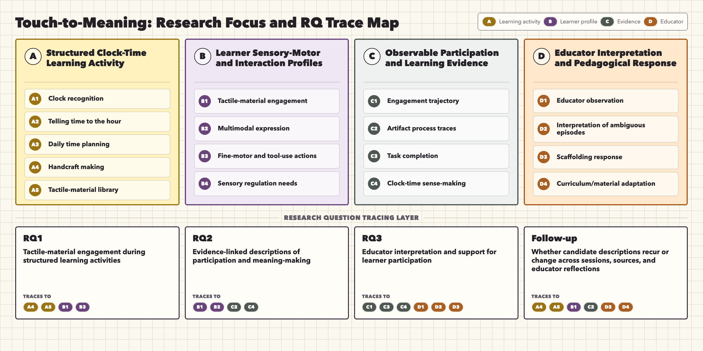

Canonical research frame
Research questions and data mapping
Concept diagram
Research focus and RQ trace map

Data contract
RQ-data mapping matrix
0 sources visible
Learner profile panel
Learner/persona cards
Selected workshop
Workshop Study Design
Classroom map
Spatial and task-flow plans
Session summary
Workshop summary
Final documents
Source files
Select a document
Open full view
Internal raw archive
Archived data
Method and literature review
Video analysis method base
Literature review notes and framework placement
Framework placement
Method anchors and citation links
0 frameworks visible
Reading tracking
Collections and subcollections
0 sources visible
McNaughton-adapted workflow
Video Data Analysis Stage
Structured workflow
Five stages from log validation to RQ-linked themes
Pair-level event description
Narrative summaries
Analysis boundaries
Consent and interpretation guardrails
Analysis memo space
Key Episodes
Drafted from field notes and video memo
Thematic episodes
O1 Key Episodes from June 9
Open memo
Unfinished analysis threads
Project record
Meeting Notes
Dated records of mentor and supervisor discussions, decisions, and follow-up tasks.
0 notes
Research memo log
Research Journal
Capture working memos, evidence links, decisions, and next actions in a local project file.
Server not checked
Run the local server to save notes.
Use
node project_web/server.mjs, then open the local URL it prints.
Saved memos
Journal entries
Selected memo
No memo selected
Select a saved memo or create a new one to review the full entry here.